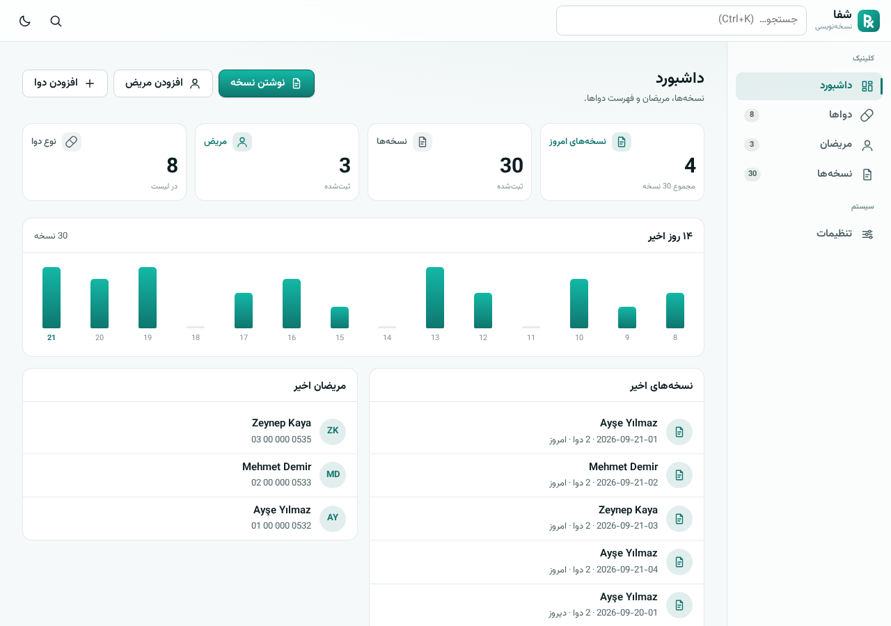
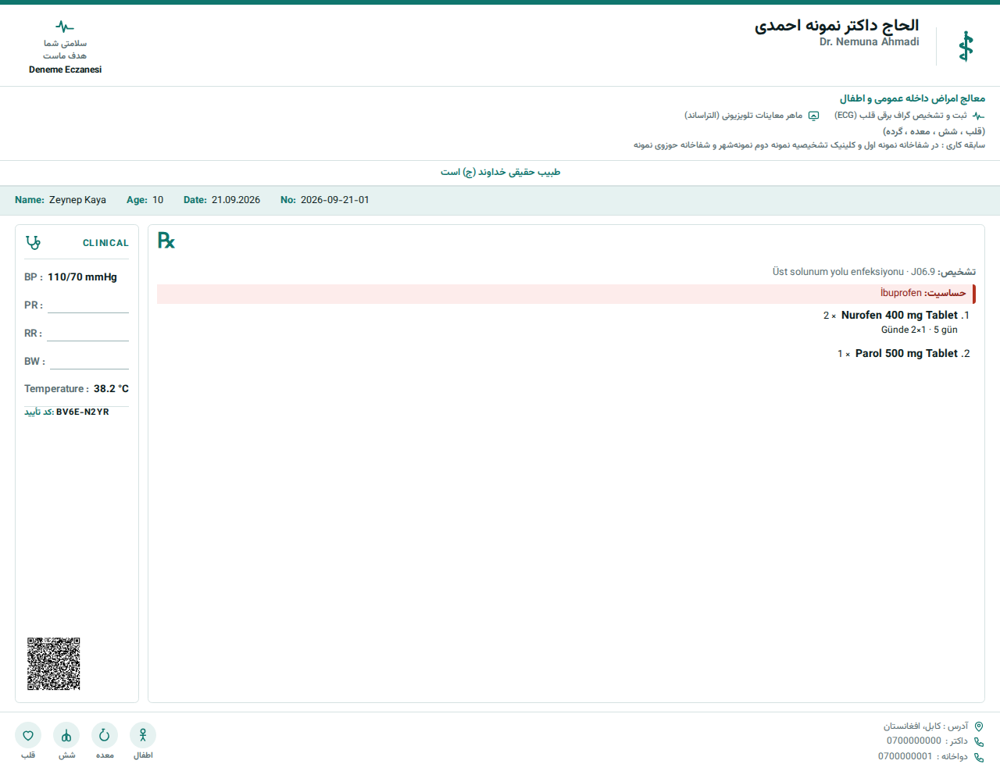

مریض را انتخاب کنید، دواها را اضافه کنید و نسخه را چاپ کنید یا بفرستید. معلومات مریضان از دستگاه بیرون نمیرود و برنامه بدون انترنت هم کار میکند.
نصب نمیخواهد؛ در مرورگر باز میشود و میتوانید به صفحه اصلی گوشی اضافه کنید.

همه چیز در حافظهی خود دستگاه ذخیره میشود. سروری در میان نیست که معلومات مریض به آن برود.
یک بار که باز شد، بعد از آن بدون انترنت هم باز میشود. در کلینیک انترنت قطع شود، کار متوقف نمیشود.
همهی معلومات در یک فایل ذخیره میشود؛ هر وقت خواستید در دستگاه دیگر برمیگردد.
نه بیشتر. برنامه دفتر گدام نیست؛ کارش نوشتن نسخه است.
مریض را انتخاب کنید، دوا را جستجو کنید، تعداد و طریقه استعمال را بنویسید. شماره نسخه خودکار داده میشود.
اگر مریض به دوایی حساسیت داشته باشد، همان لحظهی اضافه کردن هشدار میدهد. اگر یک ماده در دو سطر تکرار شود هم میگوید.
نام، تخصص، خدمات، آدرس و شمارههای خود را یک بار مینویسید؛ از آن به بعد روی هر کاغذ چاپ میشود. سه طرح دارد.
همان سربرگ را خالی چاپ کنید و مثل گذشته با قلم پر کنید. جاهای خالی خطدار چاپ میشوند.
واتساپ، ایمیل یا کاپی کردن متن. کود QR هم روی کاغذ چاپ میشود.
هر نسخه یک کد هشتحرفی دارد. اگر روی کاغذ دست برده شود، کد دیگر نمیخواند.
سربرگ از معلومات خود شما ساخته میشود. هیچ نامی در برنامه ثابت نیست.

هر نسخه هنگام ذخیره شدن یک کد میگیرد؛ این کد از خلاصهی خود نسخه و یک کلید محرمانه که فقط در دستگاه شماست ساخته میشود. اگر دواخانه شک کند، متن نسخه را برای شما میفرستد و شما در چند ثانیه آن را بررسی میکنید.
| اگر کسی… | چه میشود |
|---|---|
| تعداد، دوز یا نام دوا را روی کاغذ تغییر دهد | گرفته میشود — خلاصه عوض میشود، کد نمیخواند |
| از صفر یک نسخهی جعلی بسازد | گرفته میشود — بدون کلید محرمانه کد معتبر ساخته نمیشود |
| از یک نسخهی درست فوتوکاپی بگیرد | گرفته نمیشود — کد هم کاپی میشود |
این جدول را عمداً همینطور نوشتهایم: آنچه را که نمیگیرد هم میگوییم.

همان برنامه روی گوشی هم کامل کار میکند. از مرورگر «افزودن به صفحه اصلی» را بزنید؛ مثل یک اپلیکیشن باز میشود و بعد از آن انترنت هم لازم ندارد.
برنامه را باز کنید و از تنظیمات «معلومات نمونه» را بار کنید؛ با چند دوا و مریض نمونه میتوانید یک نسخه بنویسید و چاپ آن را ببینید. با یک کلیک هم پاک میشود.